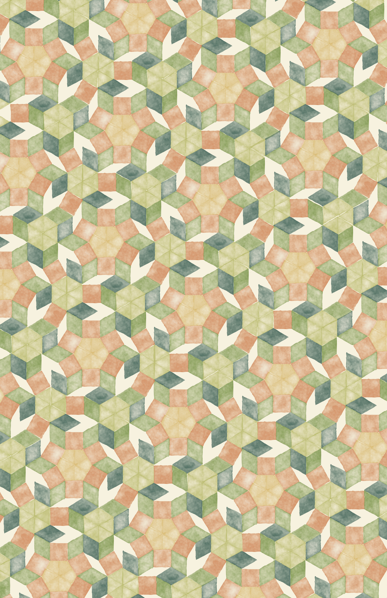
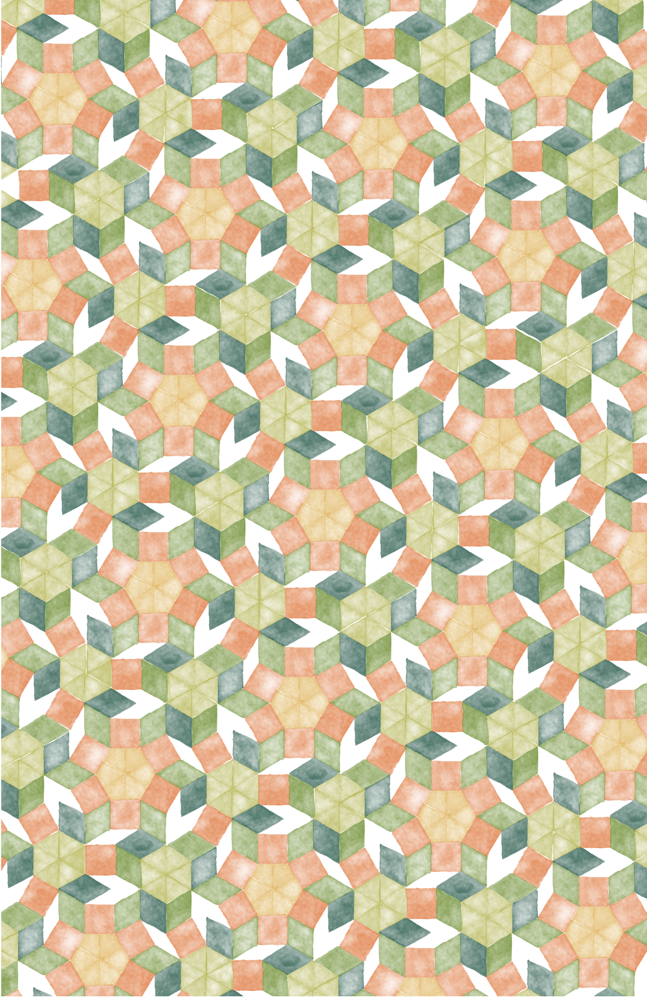

I was asked to create a pattern, logo, poster, and banner for Carleton College's Math + Art Symposium titled Points, Lines, Angles, & Shapes.
This research event brings together thinkers in the fields of mathematics and art. Presentations will explore artistic traditions including Islamic tiling and tessellation, African architecture and fractals, and Japanese sangaku, which are wooden tablets found in Shinto Shrines and Buddhist temples and are inscribed with mathematical problems.
I created two versions of a banner for digital use. The first version has the geometric pattern emerging from the side. In the second version, the pattern spans the full background.
I was asked to create a pattern inspired by historic geometric tiling. The pattern I designed is made up of penrose tiles and the kite shape that makes up an aperiodic monotile, commonly known as "the hat."
Cream color background
Transparent background
